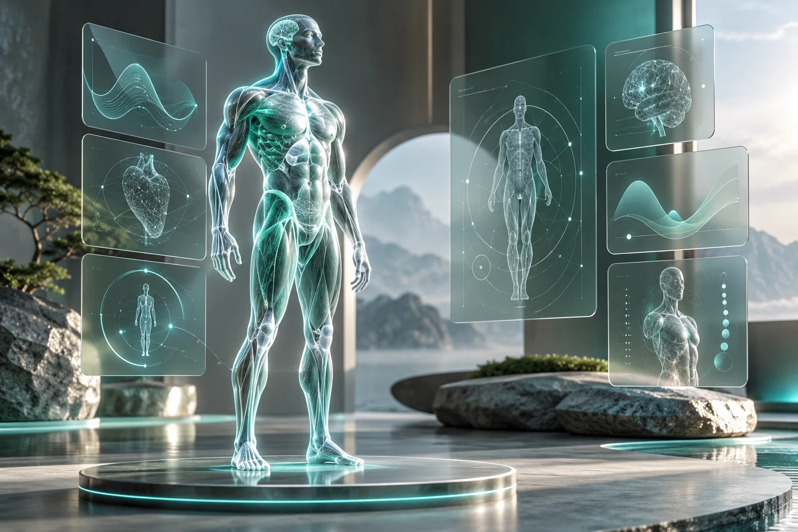

A wellness twin that learns from observation.
Connecting daily student observations, an interactive 3D twin, forecasts, and prediction feedback in one explainable loop.

- Project
- Digital twins · Student wellness
- Engineering focus
- Personalized models, consistent simulation, and feedback
- Technology
- Next.js · TypeScript · Three.js · FastAPI · scikit-learn · SQLAlchemy
The problem
A wellness dashboard can show a score without explaining how it relates to a student's changing daily routine. A useful twin needs to connect observations to its current state, make forecasts inspectable, and compare those forecasts with what happens later. It also has to remain useful before a new user has enough history to train a personal model.
The approach
The platform turns daily logs into nine wellness dimensions, displays them through a Three.js anatomical model, and exposes trends, forecasts, and what-if interventions. A FastAPI backend handles scoring and persisted per-user model bundles, while authenticated WebSocket updates keep the interface synchronized.
- Record daily observations
- Update category scores
- Synchronize the 3D twin
- Forecast or simulate
- Compare with later observations
Key decisions
Start with explainable scoring
Deterministic, bounded heuristics provide an initial state with sparse observations. Per-user Random Forest models become available when enough chronological data exists, rather than requiring a trained model at registration.
The tradeoff. A heuristic score and a learned forecast have different foundations, so the interface needs to communicate which path produced an output.
Compare interventions on the same prediction path
What-if baselines and altered observations pass through the same model path. This avoids presenting a difference that comes merely from comparing a model output with an unrelated heuristic baseline.
The tradeoff. A consistent comparison is easier to interpret, but does not establish that changing a behavior causes the predicted outcome.
Close the prediction-feedback loop
Forecasts are graded against later observations to track twin fidelity. Live score events update the interface, and each input has a primary category owner to limit double-counting in the overall score.
The tradeoff. Feedback quality depends on regular, reliable self-reports and enough overlapping observations.
Where it stands
The documented application connects daily logging, a 3D twin, predictions, simulation, analytics, recommendations, and profile management. Prediction-versus-actual tracking gives the twin a way to expose its own fit over time.
Current scope
This is an educational wellness and productivity project, not a medical diagnostic system. Self-reported observations, correlations, and simulated interventions do not demonstrate clinical validity or causal effects.
The next evaluation would track forecast errors over time for consenting users and inspect how missing or inconsistent logs affect the twin's usefulness.
Explore the build
Repository sources reviewed on 17 October 2026. The tradeoffs above reflect an analysis of the implementation and documentation.